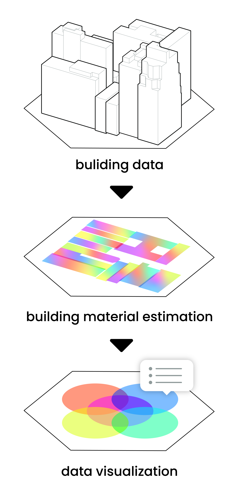

▘welcome to urban vein!

click on the map to see more info.
▘material estimation method

▘visualization archive
▘options
early 20th century commercial high-rises
built Year: 1900-1920floor count: 10-20
example: the flatiron building
early 20th century commercial high-rises
built Year: 1900-1920floor count: 10-20
example: the flatiron building
early 20th century commercial high-rises
built Year: 1900-1920floor count: 10-20
example: the flatiron building
ABOUT
STORIES
EXPLORER
🞳
brick by brick
urban vein is developed by hao lee for the computational design practices program at gsapp columbia. the project was guided by (in semester & alphabetical orders) william martin, violet witney, laura kurgan, snoweria zhang, catherine griffith, and seth thompson.
of memory & vision
urban vein explores new york city through its building materials—their composition, distribution, and transformation. it examines what exists, what is being lost, and what should be built, offering a lens into the city's evolving urban identity.
building material distribution
this map uses machine learning to analyze nyc pluto data and inferred building typologies to create a material dataset.
DATA
MEDIA
REFERENCES
PAST
PRESENT
FUTURE
LEGEND
TIMELINE
LAYERS
compare 🞃
▘material estimate 🞃
nyc buliding material estimate data
by hao lee
▘base map
nyc pluto data
by nyc department of city planning
nyc building footprints
by nyc opendata
▘base map background
new york state civil boundaries
by new york state gis resources
coastline (2012) of new jersey
by njdep bureau of gis
▘stories
construction demolition registrants
by nyc opendata
geospatial data for bedrock elevation and overburden thickness maps of the five boroughs, new york city, new york
by laura m.demott, frederick stumm, and jason s. finkelstein, in cooperation with the new york city department of design and construction
▘visualization archive 🞃
one of the key challenges of this project was to develop a clear and effective visual style for overlaying multiple layers of material information onto a single map. the goal was to ensure that users could easily distinguish and interact with each layer. the visualization process was mainly conducted in qgis, culminating in a web presentation format using d3.js.
▘collloquium ii: review poster 🞃
this is the poster for the Colloquium II end-of-semester review, designed as a 24" x 36" printed piece.
▘colloquium i: guerilla urbanism
this is colloquium i's project website, which consists of two material-related speculative projects, booleanify and balloonify.
▘graphic/visuals
climate-conflict-vulnerability index
by moritz stefaner
marathon
by bungie
g4dp f24 precedent presentations
are.na channel curated by the fall '24 gis for design practices group at gsapp columbia
▘gis/mapping
gis for design practices
by dare brawley and mario giampieri
mapping historical new york
by center for spatial research
asian american dot density map
by jia zhang
nyc construction dashboard 2022
by dob analytics
▘material estimation & circular economy
materials passports - best practices
by matthias heinrich and werner lang
estimating the recoverable value of in-situ building materials
by aida mollaei, chris bachmann, and carl haas
rsmeans data
by gordian
circularise
by circularise
zestimate
by zillow
▘speculation
roadmap 2050
by oma
▘js libraries
leaflet
originally created by volodymyr agafonkin
d3
by mike bostock and observable, inc.
geohexgrid
by alex raichev at mrcagney
chart
by evert timberg and github contributors
sortable
by lebedev konstantin and github contributors
splide
by naotoshi fujita
▘columbia gsapp m.s.cdp
▘historical nyc

using materials to identify key decisions in city planning and urban development.
▘demolition materials

demolition activity from the 1980s to 2023.
▘intro to URBAN VEIN

what is urban vein? why is it important?
▘underground nyc

concrete foundations.
▘the carbon impact of bulidilng materials

the carbon footprint of our built environment.
▘the united material kingdoms
identifying material clusters.
timeline here
▘drag to reorganize map layers
add transparency control here
-
☰buliding material
-
☰satellite imagery
-
☰openstreetmap
-
☰bedrock elevation
-
☰demolition heatmap
-
☰material carbon footprints